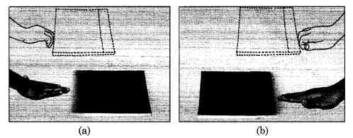
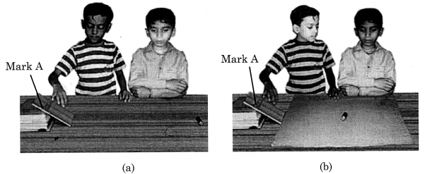
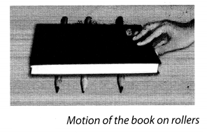
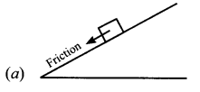
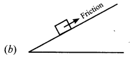
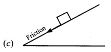
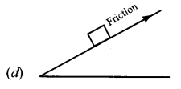

NCERT Solutions for Class 8 Science Chapter 12 Friction
Topics and Sub Topics in Class 8 Science Chapter 12 Friction:
| Section Name | Topic Name |
| 12 | Friction |
| 12.1 | Force of Friction |
| 12.2 | Factors affecting Friction |
| 12.3 | Friction : A Necessary Evil |
| 12.4 | Increasing and Reducing Friction |
| 12.5 | Wheels Reduce Friction |
| 12.6 | Fluid Friction |
Friction Class 8 Science NCERT Textbook Questions
Question 1.
Fill in the blanks.
(a) Friction opposes the ______ between the surfaces in contact with each other.
(b) Friction depends on the ______ of surfaces.
(c) Friction produces ______
(d) The sprinkling of powder on the carrom board _______ friction.
(e) Sliding friction is _______ than the static friction.
Solution:
(a) relative motion
(b) smoothness (or irregularities or nature)
(c) heat
(d) reduces
(e) less
Question 2.
Four children were asked to arrange forces due to rolling, static and sliding frictions in decreasing order. Their arrangements are given below. Choose the correct arrangement.
(a) rolling, static, sliding
(b) rolling, sliding, static
(c) static, sliding, rolling
(d) sliding, static, rolling
Solution:
(c) static, sliding, rolling.
Question 3.
Alida runs her toy car on a dry marble floor, wet marble floor, newspaper and towel spread on the floor. The force of friction acting on the car on different surfaces in increasing order will be
(a) wet marble floor, dry marble floor, newspaper and towel.
(b) newspaper, towel, dry marble floor, wet marble floor.
(c) towel, newspaper, dry marble floor, wet marble floor.
(d) wet marble floor, dry marble floor, towel, newspaper.
Answer:
(a) wet marble floor, dry marble floor, newspaper and towel.
Question 4.
Suppose your writing desk is tilted a little. A book kept on it starts sliding down. Show the direction of frictional force acting on it.
Answer:
Frictional force will act upward, i.e., the direction opposite to that of sliding book.
Question 5.
You spill a bucket of soapy water on a marble floor accidentally. Would it make it easier or more difficult for you to walk on the floor? Why?
Answer:
The layer of soap makes the floor smooth due to which the friction is reduced. This makes the floor slippery and the foot cannot make a proper grip on the floor. Therefore it is difficult to walk on a soapy floor. We may slip on the floor.
Question 6.
Explain why sportsmen use shoes with spikes.
Answer:
Sportsmen use shoes with spikes to increase the friction between shoes and the surface. So the shoes with spikes do not slip while the sportsmen run and play.
Question 7.
Iqbal has to push a lighter box and Seema has to push a similar heavier box on the same floor. Who will have to apply a larger force and why?
Answer:
A heavy object produces more friction as it is pressed hard against the opposite surface. So Seema will have to apply a larger force.
Question 8.
Explain why sliding friction is less than static friction.
Answer:
The sliding friction is less than static friction because the sliding object get less time to interlock into the contact points on the floor. So it is somewhat easier to move an object already in motion than to get it started.
Question 9.
Give examples to show that friction is both a friend and a foe.
Answer:
Some points are given below which show that friction is both a friend and a foe:
- Friction as a friend:
- It allows us to grip and catch any object.
- It helps us to walk comfortably on the floor.
- It helps to minimise the speed or to stop any moving object.
- It helps us to write.
- Friction as a foe:
- It causes wear and tears in objects.
- It causes damage to the parts of machines and tools which further require money to get them repaired.
- It reduces the speed of moving objects, so more force is required.
- It produces hurdles in moving any object freely.
Question 10.
Explain why objects moving in fluids must have special shapes.
Answer:
The objects moving in fluids must have a special shape to overcome the fluid friction acting on them. Efforts are therefore made to minimise the friction, so objects are given special shape having pointed fronts with little broader middle portion which gets tapered at the back called streamlined.
Friction Class 8 Science NCERT Intext Activities Solved
Activity 1 (NCERT Textbook, Page 146)
Gently push a book on a table [Fig. 12.2(a)]. You observe that it stops after moving for some distance. Repeat this activity pushing the book from the opposite direction [Fig. 12.2 (b)]. Does the book stop this time, too? Can you think of an explanation? Can we say that a force must be acting on the book opposing its motion? This force is called the force of friction.

Friction opposes relative motion between the surfaces of the book and the table
Solution:
Yes, the book stops this time too.
After sliding for some time, the book stops. As the surface of the table provides the frictional force to oppose the sliding • of the book.
Yes, we can say that a force must be acting on the book opposing its motion.
Activity 2 (NCERT Textbook, Page 147)
Tie a string around a brick. Pull the brick by a spring balance (Fig. 12.3). You need to apply some force. Note down the reading on the spring balance when the brick just begins to move. It gives you a measure of the force of friction between the surface of the brick and the floor.

Now wrap a piece of polythene around the brick and repeat the activity. Do you observe any difference in the readings of the spring balance in the above two cases? What might be the reason for this difference? Repeat this activity by wrapping a piece of jute bag around the brick. What do you observe?
Solution:
It is observed that the reading of the spring balance in the case when brick is wrapped with a piece of poly thene is less than the other cases.
The reason for this difference could be that in the first case, since the brick surface in contact with the ground is rough, the surface gets greater force of friction. But in second case, when the brick is wrapped with polythene, the surface gets smoother. Hence, less frictional force is required to move it.
By wrapping a piece of jute bag around the brick, it is observed that the reading of spring balance is more than the second
case, when the brick was wrapped with polythene.
Activity 3 (NCERT Textbook, Page 147-148)
Make an inclined plane on a smooth floor, or on a table. You may use a wooden board supported by bricks, or books. [Fig. 12.4 (a)]. Put a mark with a pen at any point A on the inclined plane. Now let a pencil cell move down from this point. How far does it move on the table before coming to rest? Note down the distance. Now spread a piece of cloth over the table. Make sure that there are no wrinkles in the cloth. Try the activity again [Fig. 12.4 (b)].

The pencil cell covers different distances on different surfaces Repeat this activity by spreading a thin layer of sand over the table. Maintain the same slope throughout the activity.
Solution:
The distance covered by the pencil cell is different every time because of the different amounts of friction provided by different surfaces. The distance covered with a thin layer of sand is least, as this surface provides the maximum friction.
Activity 4 (NCERT Textbook, Page 152)
Take a few pencils which are cylindrical in shape. Place them parallel to each other on a table. Place a thick book over it (Fig. 12.5). Now push the book. You observe the pencils rolling as the book moves. Do you feel it easier to move the book in this way than to slide it? Do you think that resistance to the motion of the book has been reduced? Have you seen heavy machinery being moved by placing logs under it?

Solution:
It is observed that the book moves efficiently when placed on cylindrical pencils or rollers. It can be concluded that rolling friction is smaller than the sliding friction.
NCERT Solutions for Class 8 Science Chapter 12 – 1 Mark Questions and Answers
Question 1.
Define friction.
Answer:
Friction is the force which resists the motion of a body, while moving on a surface.
Question 2.
What is meant by sliding friction ?
Answer:
When one surface is sliding over the other, sliding friction comes into play.
Question 3.
When does static friction come into play ?
Answer:
Static friction comes into play to counter balance the applied force on the body.
Question 4.
What are lubricants ?
Answer:
The substances which reduce friction are called lubricants.
Question 5.
What is rolling friction ?
Answer:
When one body rolls over the surface of another body, the resistance to its motion is called the rolling friction.
Question 6.
What are fluids ?
Answer:
Fluids is the common name given to gases and liquids.
Question 7.
Do fluids exert friction ?
Answer:
Yes, fluids also exert friction.
Question 8.
What is meant by air resistance ?
Answer:
There is friction between a moving object and the air through which it moves, known as air resistance.
Question 9.
What is meant by drag ?
Answer:
The frictional force exerted by fluids is known as drag.
Question 10.
Is friction a contact force or non-contact force ?
Answer:
Contact force.
Question 11.
Why is it difficult to walk on ice ?
Answer:
It is difficult to walk on ice because the friction between feet and ice is less,
Question 12.
When a boat is moving in the river, does the water offer force of friction to its movement ?
Answer:
Yes, the water opposes the movement of the boat.
NCERT Solutions for Class 8 Science Chapter 12 – 2 Mark Questions and Answers
Question 1.
When your writing desk is tilted a little, a book kept on it starts sliding down. Mention the direction of the frictional force acting on it.
Answer:
The frictional force acts in the upward direction.
Question 2.
You spill a bucket of soapy water on a marble floor accidently. Would it make easier or more difficult for you to walk on the floor ? Why ? [NCERT]
Answer:
It would be more difficult to walk on the floor with soapy water because when we walk on a soapy floor, there is little friction between the floor and the feet, so it becomes difficult to walk.
Question 3.
Put a tick mark on the correct choice :
When one object moves over the surface of other object.
- surface of only lower object exerts frictional force on the upper object.
- surface of only upper object exerts frictional force on the lower object.
- surfaces of both the objects exert force on each other.
- surfaces of both the objects exert force in a direction opposite to each other.
Answer:
Surfaces of both the objects exert force in a direction opposite to each other.
Question 4.
Four children have got similar toy cars. They run the car on the dry marble floor, wet marble floor, newspaper and towel simultaneously. The force of friction between the car and different surfaces in increasing order will be :
- Wet marble floor, dry marble floor, newspaper and towel.
- Newspaper, towel, dry marble floor, wet marble floor.
- Towel, newspaper, dry marble floor, wet marble floor.
- Dry marble floor, wet marble floor, towel, newspaper.
Answer:
Wet marble floor, dry marble floor, newspaper and towel.
Question 5.
Explain why sportsmen use shoes with spikes. [NCERT]
Answer:
Sportsman use shoes with spikes to increase the friction. In this way, the sportsman can run faster.
Question 6.
Iqbal has to push a lighter box and Seema has to push a similar heavier box on the Who will have to apply a larger force and why ? [NCERT]
Answer:
Seema will have to apply more force because the weight of the box increase and the friction increases. For a heavier box the ridges of the surfaces get interlocked more.
Question 7.
Explain why sliding friction is less than static friction. [NCERT]
Answer:
Sliding friction is less than static friction because it comes into play once the body has started sliding. To make the body slide, more force is required to overcome the irregularities in the surface of the body.
Question 8.
Explain why objects moving in fluids must have special shapes. [NCERT]
Answer:
Fluids also exert a frictional force on the body moving through them. Therefore, the shape of the body is streamlined to over the frictional force of fluids and to move smoothly through them.
Question 9.
Why does the force of friction exist ?
Answer:
Friction is caused by the irregularities on the two surfaces in contact.
Question 10.
Can we have surfaces with zero friction ?
Answer:
No, the friction can be less in some surfaces, but it can never be zero.
Question 11.
Which surface have more friction – rough or smooth ? Why ?
Answer:
Rough surfaces have more friction because they have larger number of irregularities.
Question 12.
Why is it possible to write on rough blackboard with chalk ?
Answer:
The chalk is rubbed on the rough blackboard while writing. In the process soft chalk particles get stuck to the irregularities of rough blackboard susfare making the writing visible.
Question 13.
A ball is set rolling on the ground. Will it stop by itself ? Why ?
Answer:
The ball will stop after sometime because the force of friction is acting from the opposite direction.
Question 14.
Why do the soles of shoes wear out ?
Answer:
The soles of shoes wear out due to the friction between the soles and the ground.
Question 15.
Why are the soles of shoes grooved ?
Answer:
Soles of shoes are grooved so as to provide better grip between the shoes and the ground.
Question 16.
Give two examples where rolling friction is utilized.
Answer:
Rolling friction is utilized by using ball bearings between the hub and the axle of a ceiling fan and the bicycle.
Question 17.
What is function of ridges on your palm and bottom of your feet ?
Answer:
The function of the ridges is to increase the friction.
Question 18.
Name the two factors on which the magnitude of frictional force depends.
Answer:
Frictional force depends on
- The weight of the body and
- The nature of the surface in contact.
Question 19.
Give two methods by which friction is reduced in the wheels of the car.
Answer:
- The wheels of the car are provided with ball bearings along the axle which reduce the friction.
- The tube and tyres are inflated which reduce friction.
NCERT Solutions for Class 8 Science Chapter 12 – 3 Mark Questions and Answers
Question 1.
Give examples to show that friction is both a friend and a foe. [NCERT]
Answer:
- Friction is a friend in the following ways — it helps us to walk, to write on the blackboard and to apply the brakes of a car.
- Friction is a foe in the following ways — it causes wear and tear of machinery and shoes, it produces heat in the machinery.
Question 2.
Why does friction increase if the two surfaces are pressed ?
Answer:
Since the friction is due to the interlocking of irregularities in the two surfaces which slide with respect to each other, it increases when the two surfaces are pressed harder.
Question 3.
Why it is easier to move a box which is already moving than one which is at rest ?
Answer:
When the box starts sliding, the contact points on its surfaces, do not get enough time to lock, into the contact points on the floor. So, the sliding friction is slightly less than static friction.
Question 4.
Why does a car stop when brakes are applied ?
Answer:
In cars, the friction is increased by using brake pads in the brake system. The brake pads do not touch the wheels but when we press the brake level, these pads arrest the motion of the run due to friction and the wheels stop moving.
Question 5.
Give three factors on which the frictional force in fluids depends.
Answer:
The frictional force in fluids depends on :
- The speed of object with respect to the fluid
- The shape of the object.
- Nature of the fluid.
Question 6.
A labourer has to push a heavy trunk. What should be done to reduce his effort in pushing it and why ?
Answer:
The labourer should put some cylindrical logs of wood under the trunk. In this way the area of contact between the two surfaces is reduced. Rolling friction is less than sliding friction.
Question 7.
Give three harmful effects of friction.
Answer:
- Friction generates heat, for e.g., between the parts of machinery.
- Friction causes wear and tear of the rubbing surfaces e.g., soles of shoes wear out.
- Friction reduces the speed of the body and increases the consumption of energy.
Question 8.
Why is friction essential ? Give three examples.
Answer:
- Friction is necessary between the soles of our feet and ground so that we can walk without slipping.
- Friction helps us in writing on paper.
- Friction makes it possible to light a match stick, by rubbing it along the rough surface of the match box.
Question 9.
- How do trees help reduce friction ?
- Why do meteors bum on entering the atmosphere ?
Answer:
- Trees slow down strong winds and save us from wind storms.
- The speed of the meteor is very high. Therefore, there is a large amount of friction between the air and meteor. This generates a lot of heat and the meteor starts burning.
Question 10.
Gaurav went to the market on his bicycle. He found that he had to apply a lot of force while pedalling. Why ? What can he do ?
Answer:
Gaurav had to apply more force because there was more friction between the parts of the bicycle. He should apply oil to the parts to reduce the friction.
NCERT Solutions for Class 8 Science Chapter 12 – 5 Mark Questions and Answers
Question 1.
Fill in the blanks : [NCERT]
- Friction opposes the ………….. between the surfaces in contact with each other.
- Friction depends on the ………….. of surfaces.
- Friction produces …………..
- Sprinkling of powder on the carom board ……….. friction.
- Sliding friction is …………… than the static friction.
Answer:
- Relative motion
- Nature
- Heat
- Reduces
- Surface area
Question 2.
Give five examples to show that friction is increased deliberately.
Answer:
- Atheletes wear spiked shoes to help them run fast.
- Mountaineers wear spiked shoes while walking on snow.
- The tyres of vehicles are grooved.
- The roads are made rough.
- The blackboard is made rough.
Question 3.
Why are heat resistant tiles laid along the surface of spaceships ?
Answer:
The spaceships are sent into the space from the rockets with a very high speed. This creates a very high frictional force between the air and spaceship. As result, the spaceship gets heated to red hot. The heat resistant tiles save the spaceship from burning.
Question 4.
What is meant by lubrication ? Why do we lubricate the moving parts of our vehicles ? Name some lubricants and where they are used.
Answer:
Lubrication means oiling the machines from time to time. Lubrication of the moving parts is done to reduce friction between them. We can use oil or grease in machines. Graphite can be used in machines which reach a very high temperature.
Question 5.
What is meant by “streamlined shape” ? Where and why is this shape used ? To whom has nature provided streamlined body ?
Answer:
Streamlined shape means they are narrow in front and broader at the back. The bodies of aeroplanes, missiles and rockets are streamlined to reduce friction with air. Ships and boats have a streamlined shape to reduce friction with air. Nature has given birds and fish streamlined bodies.
NCERT Solutions for Class 8 Science Chapter 12 MCQs
Question 1.
Suppose your writing desk is tilted a little. A book kept on it, starts sliding down. The figure, showing the correct direction of frictional-force acting on it, is




Answer:
(d)
Question 2.
Friction, that exists between two surfaces in contact, when there is no relative motion between them, is called
(a) sliding friction
(b) static friction
(c) viscous drag
(d) rolling friction
Answer:
(b)
Question 3.
Four students were asked to arrange forces due to rolling, static and sliding frictions in an increasing order. Their arrangements are listed below. Choose the correct arrangement. [NCERT]
(a) rolling, static, sliding
(b) rolling, sliding, static
(c) static, sliding, rolling
(d) static, rolling, sliding
Answer:
(b)
Question 4.
The energy required to overcome friction is mainly converted into
(a) sound energy
(b) heat energy
(c) light energy
(d) chemical energy
Answer:
(b)
Question 5.
Out of the following, the better lubricant to be used in the moving parts of a machine,
(a) water
(b) air
(c) chalk powder
(d) turpentine oil
Answer:
(d)
Question 6.
Force of friction is more in
(a) marble tiles
(b) wooden floor
(c) playground
(d) glass table
Answer:
(c)
Question 7.
Once a body starts moving on table, the friction which comes into play is
(a) static friction
(b) sliding friction
(c) limiting friction
(d) none of these
Answer:
(b)
Question 8.
The force of friction that comes into play when one body rolls over another surface, is
(a) sliding friction
(b) limiting friction
(c) rolling friction
(d) static friction
Answer:
(c)
Question 9.
These days we use suitcases with wheels because
(a) they look smart
(b) they are easy to carry
(c) they make less noise a
(d) none of these
Answer:
(b)
Question 10.
Tyres have cut grooves in them
(a) to increase friction
(b) to decrease friction .
(c) to make them look attractive
(d) to save rubber
Answer:
(a)
More CBSE Class 8 Study Material
- NCERT Solutions for Class 8 Maths
- NCERT Solutions for Class 8 Science
- NCERT Solutions for Class 8 Social Science
- NCERT Solutions for Class 8 English
- NCERT Solutions for Class 8 English Honeydew
- NCERT Solutions for Class 8 English It So Happened
- NCERT Solutions for Class 8 Hindi
- NCERT Solutions for Class 8 Sanskrit
- NCERT Solutions